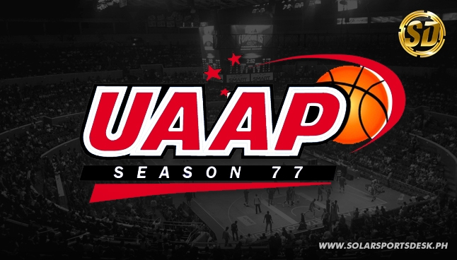
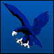
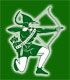

History of the UAAP
University Athletics Association of the Philippines
The University Athletics Association of the Philippines (UAAP) is a sports association home to eight universities in the Philippines: Adamson University, Ateneo de Manila University, De La Salle University, Far Eastern University, National University, University of the East, University of the Philippines, and the University of Santo Tomas. Established in 1938, it is one of the oldest athletic conferences in the country and has emerged to be the most popular inter-university sports association today. The eight member universities compete in three divisions (Seniors', Juniors', and Women's) in fourteen sports.
Basketball, the most popular sport in the country stats off the UAAP Season.
Seal
The UAAP seal features the university colors of the eight member-schools of the league in a circular formation. It also bears the year when the league was established, 1938, in the center.
The seal changes every season where the university colors of the season host is placed on the very top. Nonetheless, the arrangement of the colors never changes.
The colors of University of the Philippines (green and maroon), University of Santo Tomas (gold and white), Far Eastern University (gold and green), and National University (gold and blue) come first, clockwise. These are followed by the colors of Ateneo de Manila University (blue and white), De La Salle University (green and white), Adamson University (blue and white), and University of the East (red and white).
Member Schools
Established in 1938, the UAAP started with only four schools, namely UP, UST, NU, and FEU. Since then, it has dynamically expanded to become a full-pledging varsity league with the inclusion of UE and Adamson (1952), Ateneo (1978), and La Salle (1986) as members, competing in 14 disciplines.
| Team Monickers |
| Seniors |
Adamson University
1952–53, 1970–present
|
Soaring Falcons |

Ateneo de Manila University
1978–present
|
Blue Eagles |

De La Salle University
1986–present
|
Green Archers |
Far Eastern University
1938–present
|
Tamaraws |
National University
1938-present
|
Bulldogs |
University of the East
1952-present
|
Red Warriors |
University of the Philippines
1938–present
|
Fighting Maroons |
University of Santo Tomas
1938–present
|
Growling Tigers |